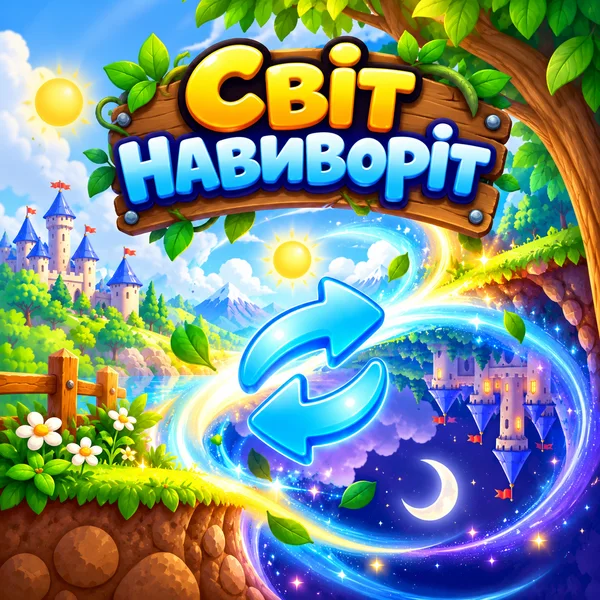

Нове Світ навиворіт Усе працює нормально… поки не станеться Переворот! Збагни нове правило — і використай його. 🚌 🌳 🏪 🕰️ 🚪 🏚️ 🔦 🗿 🧹 🏦 🎵 🗺️ На карту ▶📡 Немає інтернету — граємо в збережені ігри.

Нове Світ навиворіт Усе працює нормально… поки не станеться Переворот! Збагни нове правило — і використай його. 🚌 🌳 🏪 🕰️ 🚪 🏚️ 🔦 🗿 🧹 🏦 🎵 🗺️ На карту ▶